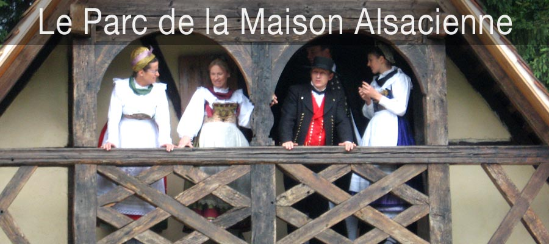
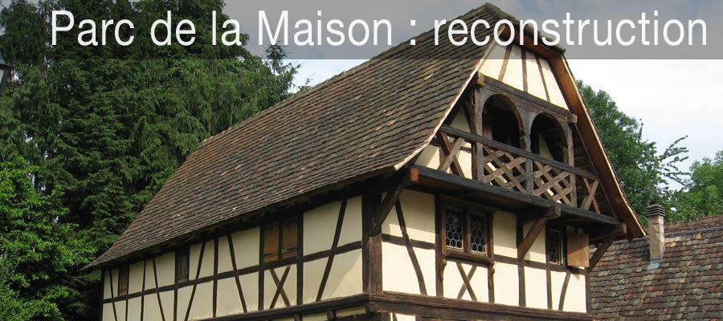
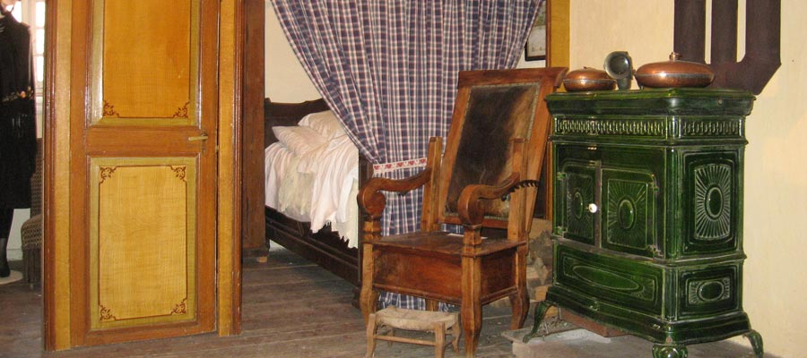
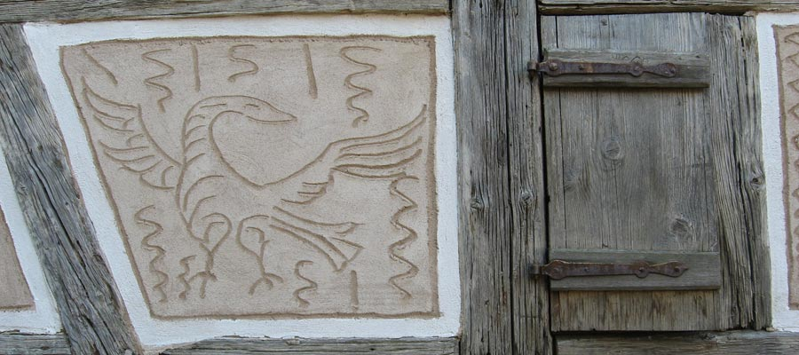
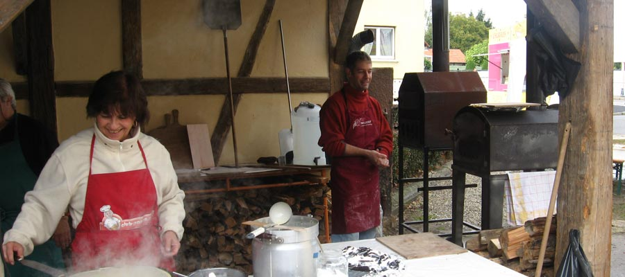
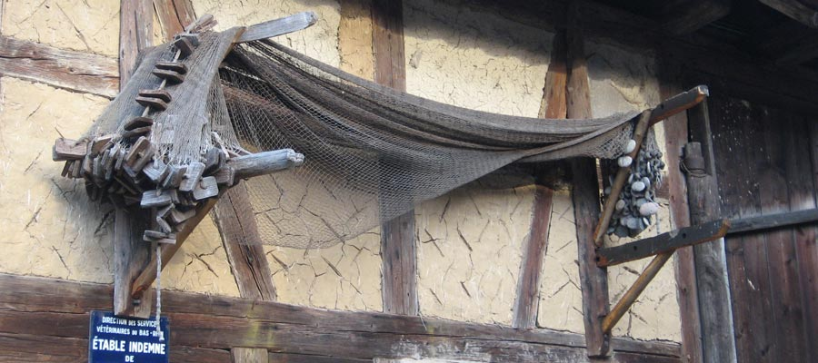
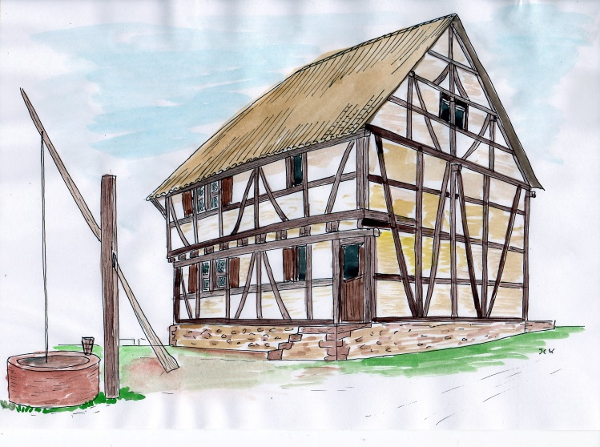

Freilichtmuseum · Reichstett
Das Elsass erzählt sich Haus für Haus.
Ein lebendiges Freilichtmuseum mit fünf Jahrhunderten Baukultur, Handwerk und Traditionen, 10 km von Straßburg entfernt.
01 / 08
Parc de la Maison Alsacienne
Besuch im Park
Entdecken Sie den Park frei oder bei einer Führung. Gruppen und Schulklassen sind nach Anmeldung willkommen.
Besuch planen →
Mitmachen
Freiwilligen-Workcamps
Internationale Denkmalschutz-Workcamps in Reichstett ab 16 Jahren.
Gemeinsam erhalten99 Fotografien
Entdecken Sie Häuser, Gegenstände, Traditionen und Restaurierungsarbeiten.
Galerie →